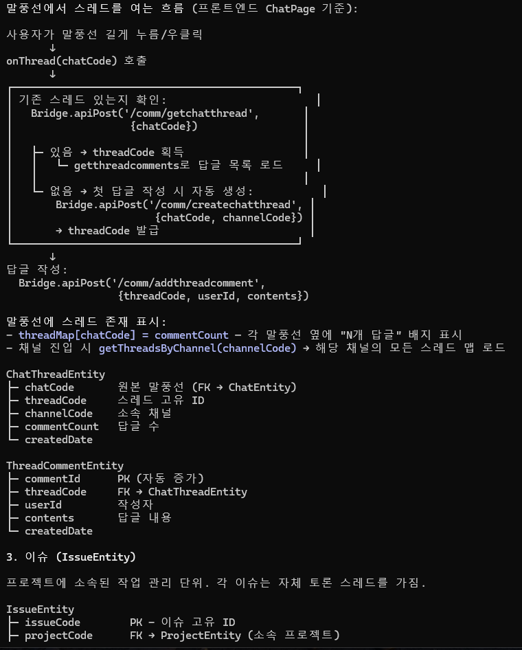
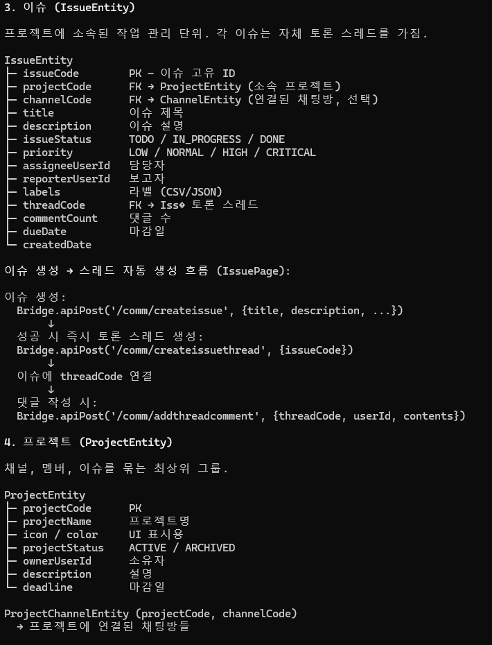

project.db 프로젝트 · 이슈 · 스레드 · 답글
가장 엔티티가 많은 DB. 프로젝트/이슈/할일/캘린더/스레드/댓글을 통합 관리.
핵심 포인트는 ChatThread와 IssueThread가 ThreadCommentEntity를 공유한다는 점.
파일: project_{userId}.db. 정의: ProjectDatabase.kt
엔티티 목록
| Entity | 테이블 | PK | 역할 |
|---|---|---|---|
ProjectEntity | projects | projectCode | 프로젝트 메타 |
ProjectChannelEntity | projectChannels | (projectCode, channelCode) | 프로젝트 ↔ 채널 연결 |
ProjectMemberEntity | projectMembers | (projectCode, userId) | 프로젝트 멤버 |
IssueEntity | issues | issueCode | 이슈 (작업 관리) |
IssueThreadEntity | issueThreads | (issueCode, threadCode) | 이슈 토론 스레드 |
ChatThreadEntity | chatThreads | (chatCode, threadCode) | 말풍선 토론 스레드 |
ThreadCommentEntity | threadComments | commentId | 스레드 댓글 (공유 테이블) |
ProjectSyncMetaEntity | projectSyncMeta | key | 프로젝트 도메인 sync 상태 |
관계도
erDiagram
ProjectEntity ||--o{ ProjectMemberEntity : "projectCode"
ProjectEntity ||--o{ ProjectChannelEntity : "projectCode"
ProjectEntity ||--o{ IssueEntity : "projectCode"
ProjectChannelEntity }o--|| "channels (chat.db)" : "channelCode"
IssueEntity }o--o| "channels (chat.db)" : "channelCode (선택)"
IssueEntity ||--o| IssueThreadEntity : "issueCode → threadCode"
IssueThreadEntity ||--o{ ThreadCommentEntity : "threadCode"
"chats (chat.db)" ||--o{ ChatThreadEntity : "chatCode → threadCode"
ChatThreadEntity ||--o{ ThreadCommentEntity : "threadCode"
1. ProjectEntity
@Entity(tableName = "projects")
data class ProjectEntity(
@PrimaryKey val projectCode: String,
val projectName: String = "",
val icon: String = "",
val color: String = "",
val projectStatus: String = "ACTIVE", // ACTIVE / ARCHIVED
val ownerUserId: String = "",
val description: String = "",
val deadline: Long = 0L,
val modDate: Long = 0L,
val createdDate: Long = 0L
)2. IssueEntity
@Entity(tableName = "issues")
data class IssueEntity(
@PrimaryKey val issueCode: String,
val projectCode: String = "", // FK → ProjectEntity
val channelCode: String = "", // FK → ChannelEntity (선택)
val title: String = "",
val description: String = "",
val issueType: String = "TASK", // TODO / TASK / BUG / STORY / EPIC
val issueStatus: String = "TODO", // TODO / IN_PROGRESS / DONE / BACKLOG
val priority: String = "NORMAL", // LOW / NORMAL / HIGH / CRITICAL
val assigneeUserId: String = "",
val reporterUserId: String = "",
val labels: String = "", // CSV 또는 JSON
val dueDate: Long = 0L,
val completedDate: Long = 0L,
val modDate: Long = 0L,
val createdDate: Long = 0L,
val threadCode: String = "", // FK → Thread (이슈 토론)
val commentCount: Int = 0
)3. ChatThreadEntity (말풍선 스레드)
@Entity(tableName = "chatThreads", primaryKeys = ["chatCode", "threadCode"])
data class ChatThreadEntity(
val chatCode: String, // 원본 말풍선 (FK → ChatEntity)
val threadCode: String, // 스레드 고유 ID
val channelCode: String = "", // 소속 채널
val commentCount: Int = 0,
val createdDate: Long = 0L
)4. IssueThreadEntity (이슈 스레드)
@Entity(tableName = "issueThreads", primaryKeys = ["issueCode", "threadCode"])
data class IssueThreadEntity(
val issueCode: String, // FK → IssueEntity
val threadCode: String,
val commentCount: Int = 0,
val createdDate: Long = 0L
)5. ThreadCommentEntity (공유 댓글 테이블)
@Entity(tableName = "threadComments")
data class ThreadCommentEntity(
@PrimaryKey val commentId: Int, // 서버 발급 (auto increment on server)
val threadCode: String = "", // FK → ChatThread 또는 IssueThread
val userId: String = "",
val contents: String = "",
val createdDate: Long = 0L
)
왜 공유 테이블인가?
댓글 UI·처리 로직이 스레드 출처(말풍선/이슈)에 관계없이 동일합니다.
댓글 UI·처리 로직이 스레드 출처(말풍선/이슈)에 관계없이 동일합니다.
threadCode로만 필터링하면 되므로 별도 테이블로 나눌 이유가 없습니다. 원본 j.png "핵심 포인트" 참고.
말풍선 → 스레드 생성 흐름
사용자가 말풍선 길게 누르기/우클릭 → "스레드로 답글" 액션:
sequenceDiagram
participant UI as React ChatPage
participant B as Bridge
participant A as apiPost
UI->>UI: onThread(chatCode) 호출
UI->>A: Bridge.apiPost('/comm/getchatthread', {chatCode})
A-->>UI: 기존 스레드 있으면 {threadCode}
alt 없음 (첫 답글)
UI->>A: Bridge.apiPost('/comm/createchatthread', {chatCode, channelCode})
A-->>UI: {threadCode} (서버 발급)
end
UI->>A: Bridge.apiPost('/comm/addthreadcomment', {threadCode, userId, contents})
Note over UI: threadMap[chatCode] = commentCount
말풍선에 "N개 답글" 배지 표시
말풍선에 "N개 답글" 배지 표시
이슈 생성 → 스레드 자동 생성
// IssuePage에서
await Bridge.apiPost('/comm/createissue', {title, description, ...});
// 성공 시 즉시
await Bridge.apiPost('/comm/createissuethread', {issueCode});
// 이후 댓글 작성은 대화 스레드와 동일
await Bridge.apiPost('/comm/addthreadcomment', {threadCode, userId, contents});

Todo / Calendar
이 앱의 투두와 캘린더 이벤트는 현재 로컬 DB에 엔티티가 없고 REST forward로만 처리됩니다 (getTodos, createCalEvent 등). 서버 측 DB에만 존재.